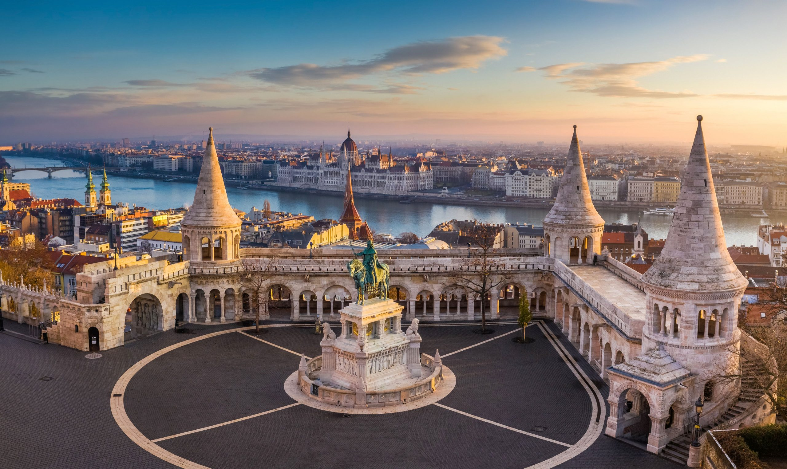
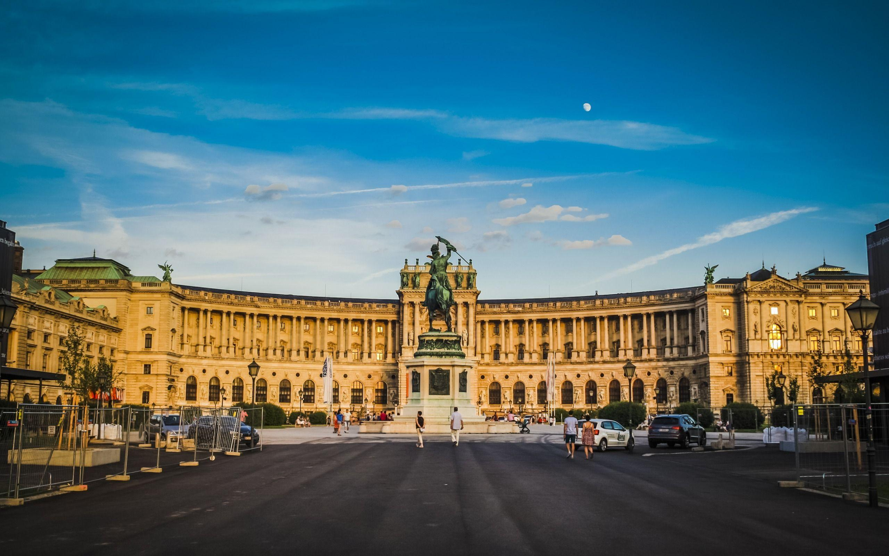
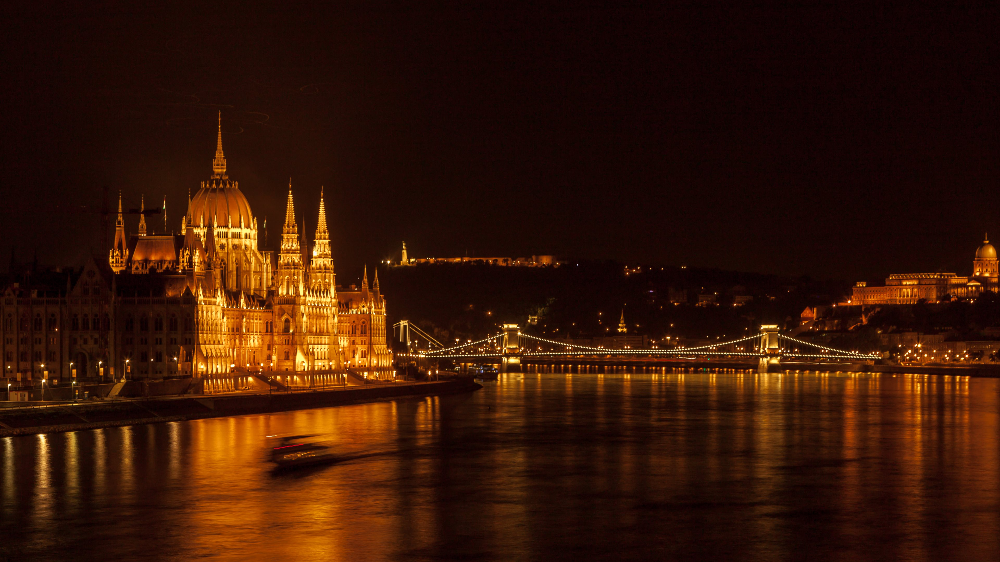
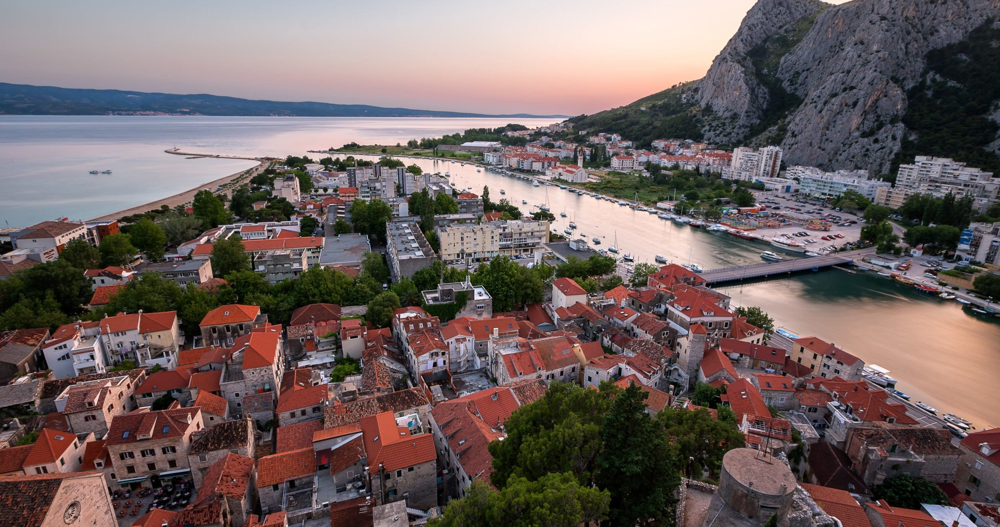
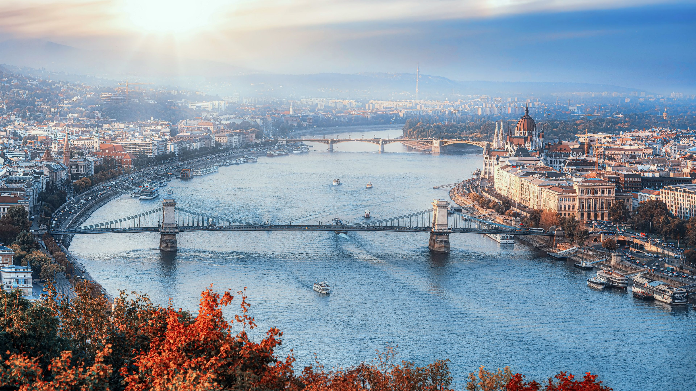
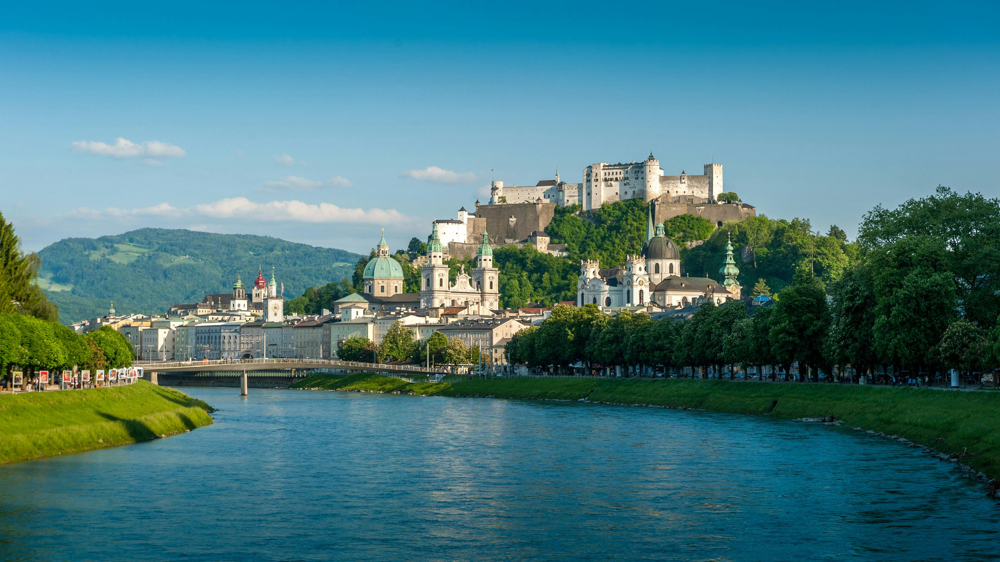
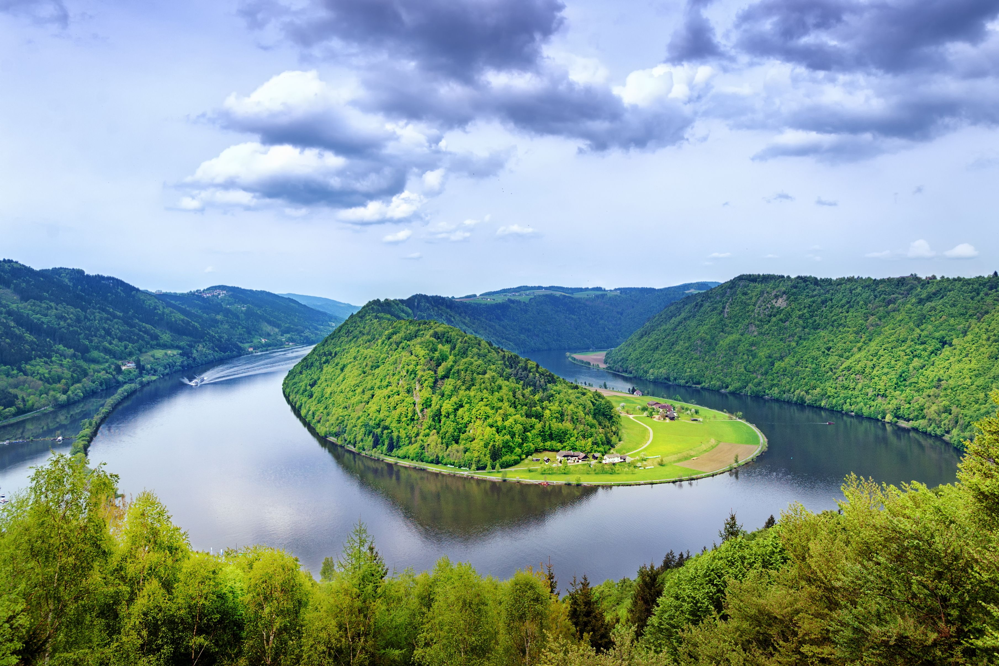
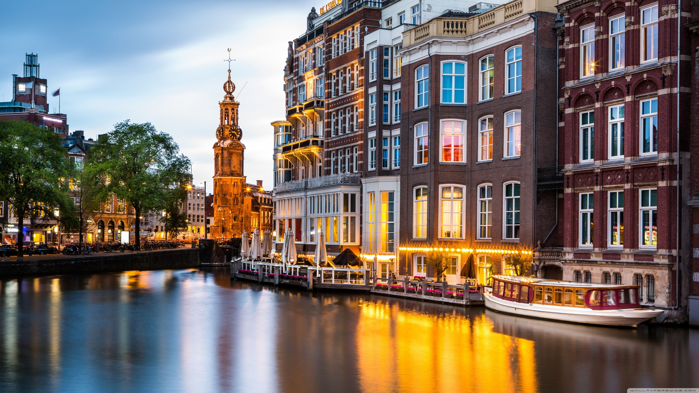
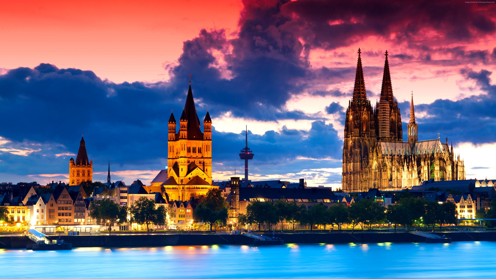

Available Itineraries

Best of the Danube
Journey along the Danube and uncover the imperial splendor of Old-World Europe. Begin with a pre-cruise stay in Budapest before sailing through the stunning Wachau Valley, a UNESCO World Heritage Site. Explore the grand capitals of Bratislava and Vienna, rich with art, music, and timeless architecture. Conclude in Salzburg, where The Sound of Music and Mozart's legacy continue to inspire.
Learn More
Melodies of the Danube
Sail the legendary Danube and discover why this river has long inspired artists, poets, and musicians. Admire timeless architecture and art in Budapest, Bratislava, and Vienna. Feel the music come alive in Salzburg and the Austrian Lake District. Glide through the enchanting Strudengau Valley as the melodies of the Danube guide you through history's most regal landscapes.
Learn More
Magna on the Danube
Indulge your love for architecture, music, and fine cuisine on an itinerary crafted for AmaMagna. Taste apricot brandy and chocolate in Dürnstein and enjoy a wine festival in Spitz. Explore Vienna's Baroque beauty at Schönbrunn Palace and experience the vibrant charm of Budapest and Bratislava.
Learn More
Grand Danube Cruise
Follow the path of conquerors, crusaders, and kings through Romania, Bulgaria, Serbia, Croatia, Hungary, Austria, and Germany. Sail the Danube and pass the dramatic Iron Gates. See Bulgaria's Rock-Hewn Churches of Ivanovo and taste Roman heritage in Pécs. From Budapest to Vienna, discover the folklore and traditions that keep this region's past alive.
Learn More
Romantic Danube
Experience the romance of Old World Europe at the heart of the continent. Explore the timeless cities of Vienna, Bratislava, and Budapest. Discover the charm of Salzburg and the fairytale town of Český Krumlov. From grand abbeys to hilltop fortresses, the Danube invites you to revel in her regal splendor.
Learn More
Blue Danube Discovery
Uncover Europe's artistic, historical, and cultural treasures on a journey through its most iconic destinations. Sail from Budapest to Vienna, Passau, and the ancient town of Regensburg, a UNESCO World Heritage Site. Visit grand cathedrals, taste Vienna's famous sacher-torte, and witness the beauty of Europe's landscapes.
Learn More
Magnificent Europe
Sail the route of emperors and kings on a grand journey along the Danube, Main, and Rhine through five captivating countries. Discover UNESCO treasures like Cologne's Cathedral, Würzburg's Residenz Palace, and the Old Towns of Bamberg and Regensburg. Taste fine Rieslings, savor regional cuisines, and explore by bike or hike.
Learn More
Legendary Danube
Begin in the medieval city of Nuremberg and end in the cultural splendor of Budapest on a voyage through Europe's rich past. Cruise the Main-Danube Canal and cross the Continental Divide, a true engineering marvel. Discover Regensburg's timeless beauty and Vienna's imperial elegance.
Learn More
Gems of Southeast Europe
Sail the lower Danube through Hungary, Croatia, Serbia, Bulgaria, and Romania. Explore Celtic fortresses, medieval towns, and grand cities surrounded by pastoral landscapes and the famed Iron Gates. Bike through Belgrade's Kalemegdan Park or savor wines from Croatia's ancient vineyards.
Learn More
Vienna & the Danube
Trace the Danube through vineyard valleys and dramatic bends before arriving in Vienna, where art, culture, and classical music will shape your day. In Linz, choose the local museum that interests you. This city escape pairs the river's natural grandeur with Vienna's timeless imperial splendor.
Learn More